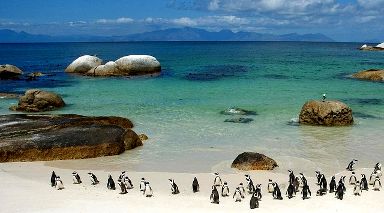
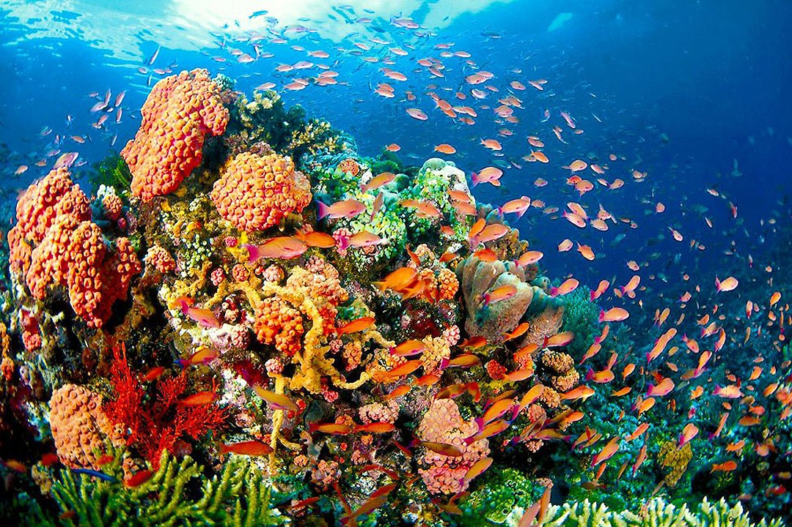

Marine & Birdlife
South Africa’s coastline is home to incredible marine and birdlife. Boulders Beach near Cape Town is famous for its African penguin colony, while Hermanus offers one of the best whale-watching experiences in the world.
Coastal wetlands and estuaries attract numerous bird species, making this region a haven for birdwatchers and nature photographers. Visitors can enjoy kayaking, snorkeling, guided tours, and explore the rich biodiversity of South Africa’s coastal ecosystems.